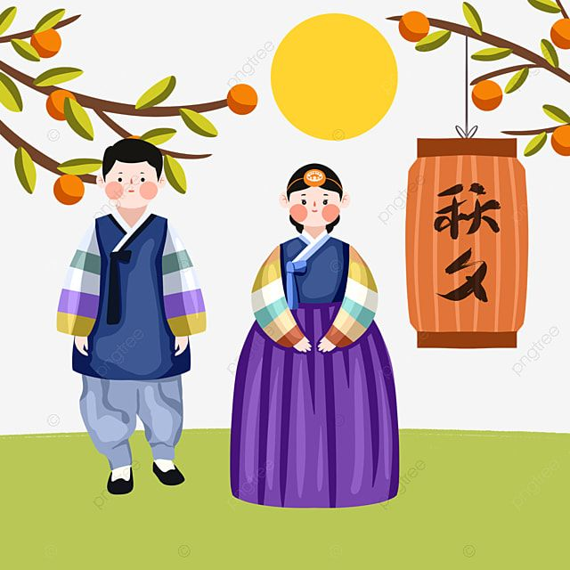

한복은 대한민국의 전통 의상으로 5000여 년 한민족의 삶에서 기본 구성을 유지하면서도 당대의 생활 문화와 시대 상황,
미의식 등에 따라 형태와 구조가 다양하게 변화해왔다. 현재 우리가 입는 한복은 조선 시대 중ㆍ후기 형태를 따르고 있다.
한복은 상의와 하의가 나누어진 구조로 되어 있다. 그 기본 구성을 살펴보면, 남성 한복은 바지, 저고리, 조끼, 포로
이루어지고 그 외에 바지를 입는 데 필요한 허리띠와 대님, 버선, 신발이 있다. 여성 한복은 속바지, 속치마, 겉치마,
속적삼, 저고리, 포, 버선, 신발 등으로 이루어지며 장식품으로 노리개, 반지, 뒤꽂이 등이 있다.
한복은 서양복처럼 처음 만들 때부터 입체적인 체형에 맞게 만들지 않고 평면적인 형태로 만들지만 실제로 한복을 입으면
입은 사람의 체형에 맞춘 듯이 입체적으로 변화한다. 즉, 입는 이의 체형과 입는 방법에 따라서 옷의 맵시가 달라지고,
그에 따라 생기는 자연스런 선의 흐름이 아름답게 나타난다.
요즘 K-드라마가 OTT를 통해 인기를 끌면서 사극 드라마 역시 주목받았다. 드라마 속 한복에 많은 관심이 쏟아지고 있다.
그 영향 때문인지 한복을 선물하는 경우가 많아졌다.